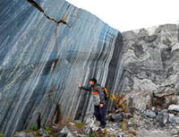
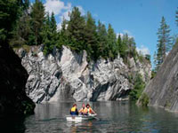

 Рускеальские каменоломни — это памятник природы и горного дела. Они находится в Сортавальском районе, в 24 километрах к северу от города Сортавала, рядом с поселком Рускеала. Мрамор тут добывали ещё с конца XVII века. Рускеальский мрамор использовался при украшении очень многих архитектурных шедевров Петербурга, Царского Села, Гатчины. Только с 1769 по 1830 год здесь наломали 200 000 тонн мрамора.
 Самым интересным считается Мраморный каньон. Это заполненный естественными водами самый старый карьер открытой добычи камня. Отсюда были получены блоки для облицовки многих архитектурных творений Санкт–Петербурга:
Добраться до карьера Рускеала от Петрозаводска не так просто:
Текст и фотографии с сайтов www.all-karelia.ru, tourskazka.ru, ruskeala.info.